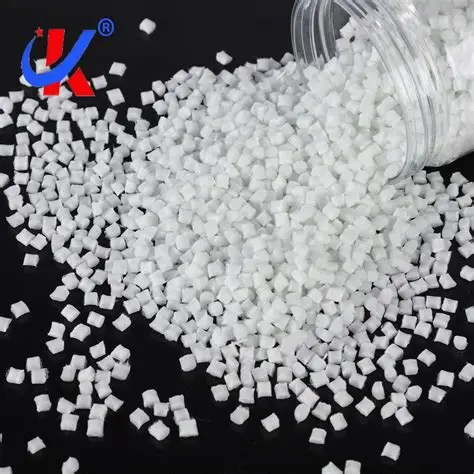
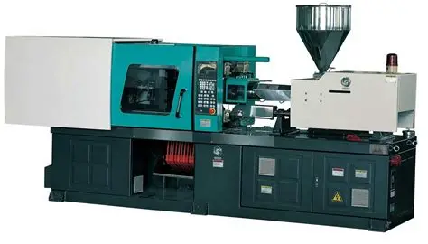
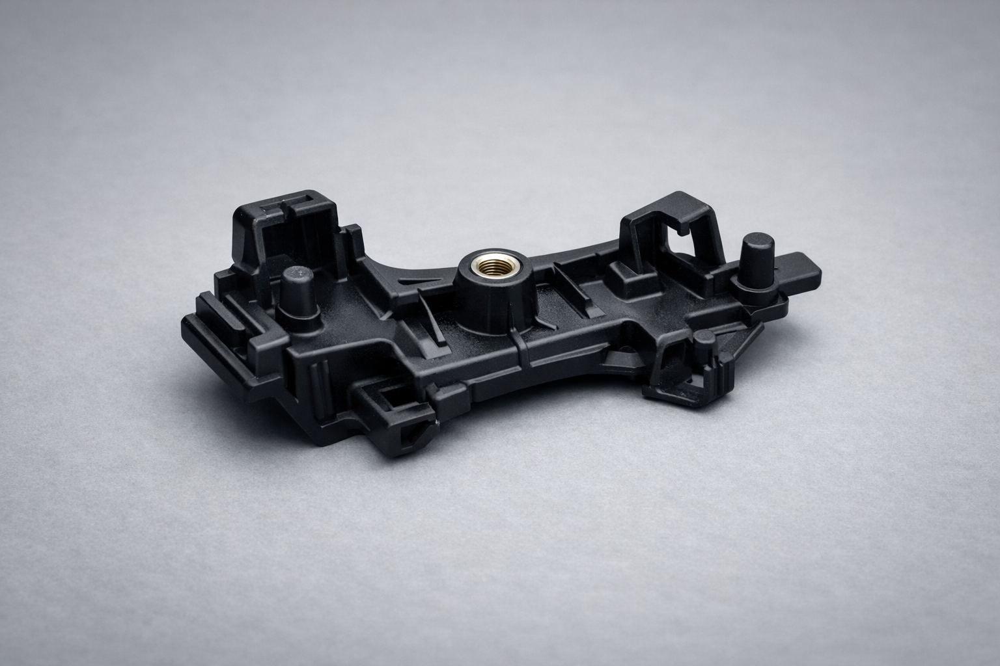
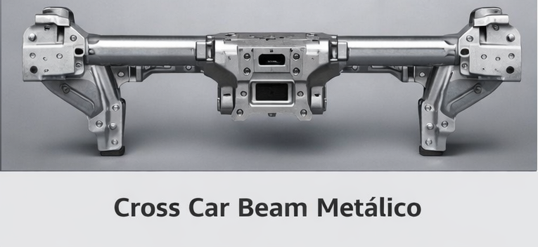

Services
Methodology
Industries
Contact
Why Choose Us
Core Services
Technical Negotiation Support
Assisting in item naming and supplier discussions.
Company Cost Diagnostics
Mapping the cost structure to optimize performance.
Should-Cost Analysis – Case Example
Injection-molded plastic component cost breakdown.

Raw Material – PP Pellets

Injection Molding Machine

Final Plastic Part
Cost Element
Description
Value (USD)
Raw Material Polypropylene granules 0.80 RM Handling Storage, drying, logistics 0.10 Processing Injection molding cycle 0.50 Indirect Overheads Maintenance, utilities 0.15 Scrap Material loss allowance 0.05 Mark-ups Profit, S&A 0.40
Total Target cost 2.00
⬅ Back to Services
Design to Cost
Design to Cost integrates cost targets into product development. Every design decision aligns with financial objectives from the start.
Cost-driven Product Design
Innovation with Cost Awareness
Cross-functional Collaboration
Case Example – Cross Car Beam
Working with Engineering, we redesigned a Cross Car Beam by replacing stamped metal parts with PP LGF components.
Result: -2.5 kg weight reduction, -R$100 per vehicle, and eliminated painting process time.

⬅ Back to Services
Supplier Cost Breakdown – Case Example
Example: Stamped metal component with painting. The breakdown reveals hidden cost drivers and creates negotiation levers.
Cost Element
Supplier Quote
Transparent Breakdown
Negotiation Lever
Raw Material (Steel Sheet)
$1.50
$1.20
Stamping Process
$0.80
$0.60
Painting
$0.70
$0.50
Overheads
$0.40
$0.25
Profit & S&A
$0.60
$0.40
Total
$4.00
$2.95
⬅ Back to Services
Product Benchmarking
Example: Truck door extension - Comparison of technical, economic, and productivity aspects for different processes.
Process
Investment (Tooling)
Unit Cost
Productivity
Durability
Stamped Steel + Paint High Medium High High Stamped Aluminum High High Medium High Plastic Injection (Double Shell) Medium Low High Medium SMC (Sheet Molding Compound) Medium Medium Medium High DCPD Low Medium Low Medium Vacuum Forming Low Low High Low
This benchmarking highlights trade-offs between cost, investment, and durability, guiding strategic decisions for product design.
⬅ Back to Services
Financial Cost Analysis – Case Example
Example: ABC curve of company costs and Net Revenue history over 10 years, identifying levers for cost reduction and revenue increase.
The ABC curve shows that 70% of costs are concentrated in a few items (A category), creating strong levers for negotiation.
The revenue history highlights growth opportunities and cost reduction strategies aligned with market expansion.
⬅ Back to Services
Our Methodology
We apply a structured, data-driven approach to identify opportunities, create value levers, and ensure sustainable results.
Data-Driven Diagnosis
Data collection and analysis to identify patterns, inefficiencies, and opportunities.
Value Lever Design
Creation and prioritization of potential levers based on impact and feasibility.
Benchmarking & Validation
Comparison with best practices and validation of hypotheses using market data.
Implementation & Tracking
Execution of initiatives and continuous monitoring of results.
Reduced costs and increased efficiency.
Performance comparison against market standards.
Consolidated impact of implemented initiatives.
Saiba mais
Industries Served
Automotive
Manufacturing
Consumer Goods
Electronics
Industrial Equipment
Our Impact
Global Reach: Brazil, Germany, Turkey, India, China, USA
⬆ Back to Top